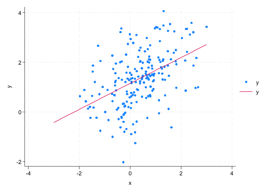

scalar mu = 0.5
scalar sigma = 1
Running C:\Users\ndl1\websites\st-andrews-ec3301\profile.do ...


The goal for this short handout is to introduce you to some basic programming tools within Stata. Lab 1 focused on the tools needed to open, manipulate, and summarize data. Here you will learn about some important programming features:
You can store a single value as a scalar.
scalar mu = 0.5
scalar sigma = 1
Running C:\Users\ndl1\websites\st-andrews-ec3301\profile.do ...
This can be useful if you want to assign values to specific parameters at the beginning of your .do file. For example, if you were creating a similuation:
* Create empty dataset
set obs 200
* Fix a random seed
set seed 8471
* Generate random variable
gen x = rnormal(mu,sigma)Number of observations (_N) was 200, now 200.You can observe list the of stored scalars using
scalar list sigma = 1
mu = .5Another useful trick is to store values from output that might be used elsewhere. For example, storing the mean of a variable to use in a plot.
sum x
scalar mean = r(mean)
gen x2 = (x-scalar(mean))^2
sum x2
Variable | Obs Mean Std. dev. Min Max
-------------+---------------------------------------------------------
x | 200 .3895645 .9882484 -1.97056 3.007021
Variable | Obs Mean Std. dev. Min Max
-------------+---------------------------------------------------------
x2 | 200 .9717517 1.344647 1.17e-08 6.851077You will notice that I referenced the scalar as scalar(mean). This is done as a precaution in case there is a variable in the dataset called mean. Stata will assume that mean is a variable
If you are going to do any advanced computations - especially if they involve complex linear algebra - I would recommend using Matlab (another proprietory software) or languages like R, Python, and Julia. However, there are times when it is useful to know how to list or manipulate a matrix in Stata.
For example, when you estimate a linear regression model, many of the results are stored as a matrix.
gen y = 1 + 0.5*x + rnormal()
quietly reg y x
ereturn list
scalars:
e(N) = 200
e(sum_w) = 200
e(df_m) = 1
e(df_r) = 198
e(F) = 54.01552680014535
e(r2) = .214334122528018
e(rmse) = .9929302113233063
e(mss) = 53.25446987997427
e(rss) = 195.2102601025921
e(r2_a) = .2103661130458363
e(ll) = -281.3636934459951
e(ll_0) = -305.4860603665048
e(rank) = 2
macros:
e(cmdline) : "regress y x"
e(title) : "Linear regression"
e(marginsok) : "XB default"
e(vce) : "ols"
e(depvar) : "y"
e(cmd) : "regress"
e(properties) : "b V"
e(predict) : "regres_p"
e(model) : "ols"
e(estat_cmd) : "regress_estat"
matrices:
e(b) : 1 x 2
e(V) : 2 x 2
e(beta) : 1 x 1
functions:
e(sample) The above code quietly (i.e. without output) regresses y on x. The command ereturn list then shows you the stored values. You will see that certain measures are stored as scalars (e.g. \(R^2\)). Then there are matrices \(b\) and \(V\): the vector of coefficients and the matrix of covariances. We can see the contents of these values using the command matrix list.
mat list e(b)
mat list e(V)
e(b)[1,2]
x _cons
y1 .52346227 1.1454724
symmetric e(V)[2,2]
x _cons
x .00507285
_cons -.0019762 .00569941Equally, we could create our own matrix:
mat def beta = e(b)
mat def var = e(V)You can then compute the t-statistic for this coefficient on x. Which should match what is displayed in the Stata regression output.
dis beta[1,1]/sqrt(var[1,1])
reg y x7.3495256
Source | SS df MS Number of obs = 200
-------------+---------------------------------- F(1, 198) = 54.02
Model | 53.2544699 1 53.2544699 Prob > F = 0.0000
Residual | 195.21026 198 .985910405 R-squared = 0.2143
-------------+---------------------------------- Adj R-squared = 0.2104
Total | 248.46473 199 1.24856648 Root MSE = .99293
------------------------------------------------------------------------------
y | Coefficient Std. err. t P>|t| [95% conf. interval]
-------------+----------------------------------------------------------------
x | .5234623 .071224 7.35 0.000 .3830074 .6639172
_cons | 1.145472 .0754944 15.17 0.000 .9965961 1.294349
------------------------------------------------------------------------------Stata also allows you to define macros. There are two types: local and global. They operate as “placeholder” or simple stores of values and can include numbers and/or text.
For example, we can define:
local hi "Hello world!"
dis `local'Notice, you need to reference a local using a specific apostrophe pair: `'.
reg y x
local b0 = _b[_cons]
local b1 = _b[x]
twoway (scatter y x) (function y = `b0' + `b1'*x, range(-3 3))
Source | SS df MS Number of obs = 200
-------------+---------------------------------- F(1, 198) = 54.02
Model | 53.2544699 1 53.2544699 Prob > F = 0.0000
Residual | 195.21026 198 .985910405 R-squared = 0.2143
-------------+---------------------------------- Adj R-squared = 0.2104
Total | 248.46473 199 1.24856648 Root MSE = .99293
------------------------------------------------------------------------------
y | Coefficient Std. err. t P>|t| [95% conf. interval]
-------------+----------------------------------------------------------------
x | .5234623 .071224 7.35 0.000 .3830074 .6639172
_cons | 1.145472 .0754944 15.17 0.000 .9965961 1.294349
------------------------------------------------------------------------------
A global uses a different notation.
global vars "y x"
dis $vars-.75781232-1.1694912The key distinction between the two types is that a local is only defined within a specific .do file, loop, or programme. In contrast, a global can be referenced across .do files. So, locals are used within loops which we will discuss next. You can see your saved macros in the following way:
macro listvars: y x
T_gm_fix_span: 0
S_E_depv: y
S_E_cmd: regress
S_level: 95
F1: help advice;
F2: describe;
F7: save
F8: use
S_ADO: BASE;SITE;.;PERSONAL;PLUS;OLDPLACE
S_StataSE: SE
S_CONSOLE: console
S_OS: Windows
S_OSDTL: 64-bit
S_MACH: PC (64-bit x86-64)
_b1: .5234622704964526
_b0: 1.145472410592256
_hi: Hello world!
S_FN: data/lcf_2023.dta
S_FNDATE: 15 Jul 2026 10:41This distinction between local and global can matter. Quite often when researchers work in Stata they execute sections of code from .do in stages. You might then think that if you execute a line that defines a local and then in the next step execute a line that uses that local it will work. No it won’t. Why?! When you highlight a subset of lines in a .do file to execute Stata creates a temporary .do file (including just those lines) and executes it. Within this temporary .do file that local is visible. Outside of it, they are not. So, when the research runs the second set of lines (creating a new temporary .do file) it does not know the definition of that previously defined local.
What to do?! When using locals you need to execute the code that defines and uses the local simultaneously.
Loops are fantastic ways to automate repetitive exercise. In Stata there are three main loop functions: forvalues, foreach, and while (see help forvalues to learn more about them). Here we will cover the first two, as while loops are used less often.
forvalues allows you to loop over a numerical sequence:
forvalues i = 0(5)20{
dis `i'^2
}0
25
100
225
400Notice that you reference the argument of the loop (i) using local notation. The name given to the argument is arbitrary and can be changed:
forvalues num = 1/10{
dis `num'*2
}2
4
6
8
10
12
14
16
18
20foreach allows you to loop through values within a list or macro:
foreach var in y x {
sum `var'
}
Variable | Obs Mean Std. dev. Min Max
-------------+---------------------------------------------------------
y | 200 1.349395 1.117393 -2.026019 4.060859
Variable | Obs Mean Std. dev. Min Max
-------------+---------------------------------------------------------
x | 200 .3895645 .9882484 -1.97056 3.007021or
foreach var of global vars {
sum `var'
}
Variable | Obs Mean Std. dev. Min Max
-------------+---------------------------------------------------------
y | 200 1.349395 1.117393 -2.026019 4.060859
Variable | Obs Mean Std. dev. Min Max
-------------+---------------------------------------------------------
x | 200 .3895645 .9882484 -1.97056 3.007021Another command which is useful in collaboration with loops is levelsof. It tells you how many different values a variable has. Suppose the dataset contained a categorical variable and you wanted to compute the mean of another variable for category.
First we will create an arbitrary categorical variable, then use levelsof to create a list.
* Create an arbitrary dummy variable =1 for the first 100 observations and =0 otherwise:
gen d = _n<=100
* Summarize y for each value of d
levelsof d
return list0 1
scalars:
r(N) = 200
r(r) = 2
macros:
r(levels) : "0 1"The function creates a macro called r(level) that contains the list of values taken by d.
Now we can run a loop through all the values:
local levels = r(levels)
foreach i of local levels {
sum y if d==`i'
}
Variable | Obs Mean Std. dev. Min Max
-------------+---------------------------------------------------------
y | 100 1.452805 1.215874 -2.026019 4.060859
Variable | Obs Mean Std. dev. Min Max
-------------+---------------------------------------------------------
y | 100 1.245984 1.004883 -1.003003 3.539168